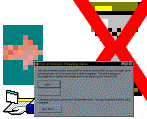

MSDN CodeFlow Sample (38K)
MSDN CodeFlow Sample (38K)
 Multi-Threaded EXE Project (18K)
Multi-Threaded EXE Project (18K)
 1 Jan 2000
1 Jan 2000
First Posted
 IShellFolder Extended Type Library Version 1.2 (ISHF_Ex.Tlb)
IShellFolder Extended Type Library Version 1.2 (ISHF_Ex.Tlb)
 Finding Which DLL Contains an API Call
Finding Which DLL Contains an API Call

Multi-Threaded VB Using ActiveX EXEs
Run code asynchronously with this simple and elegant design model
Ever since VB5 service pack 2, there has been the possibility of running VB applications multi-threaded by using ActiveX EXEs. However, if you try and research this you will find it is fiddly to get working. This article presents a method which makes running operations asynchronously really easy.
Multi-Threading
Although ActiveX EXEs can run in a new thread, I've never really understood how to get it working: you need to use CreateObject to make the object on a new thread, and then you need to be very careful as to how you start the work you want to do asynchronously. Most times you find that VB blocks until the method call is complete regardless of whether the object is in a new thread or not.
What you want to be able to do is to say I want to perform some operation asynchronously and I would like to be notified when it is complete. This project demonstrates a tiny code module and a type library you can add into your own ActiveX projects to do just that. It is based around a part of the MSDN "CodeFlow sample" (see downloads).
Asynchronous Running - Just to get it Started
The main problem with getting a multi-threaded application up and running is how to call a method in VB without the caller being blocked. It turns out there is a simple solution to this problem. The steps are as follows:
- Put the method call into an ActiveX EXE, and make it private to the EXE.
- Provide a new wrapper method to call the method you want to run asynchronously. This wrapper method enables a timer. When the timer fires, the original method is called.
This solves the problem because the method you call immediately yields control back to the caller, and then it is left to Windows pre-emptive multi-tasking to raise the timer event and kick off the process within the ActiveX EXE. There is no further interference because the ActiveX EXE is running in a different process to the caller.
In More Detail
To stop having to have a form in the ActiveX EXE, this solution is based on a Win32 API timer. Win32 API timers come in two flavours: either they notify the application when they tick by posting a WM_TIMER message to a window, or they fire a callback interface. This solution uses the callback interface, and as a consequence must be implemented within a module (because VB will not provide the address of a function to callback to for any function within an object, only one in a module).
Because the code to start the object is implemented in a module, the module must have a reference to the object instance it has to start when the timer fires. To achieve this without the possibility for errors, an interface is defined that the object can implement and the module will only use this for communication. In this sample, the interface is defined in a Type Library called Runnable. This allows you to reference the Type Library without having to declare it as a public class from the ActiveX executable.
The final implementation feature is the use of the OLE/COM API call CoLockObjectExternal to ensure that the object being started asynchronously isn't inadvertently terminated by the caller before the timer has had a chance to be fired.
Here is the code in the mStart.bas module:
' To prevent object going out of scope whilst the timer fires:
Private Declare Function CoLockObjectExternal Lib "ole32" ( _
ByVal pUnk As IUnknown, ByVal fLock As Long, _
ByVal fLastUnlockReleases As Long) As Long
' Timer API:
Private Declare Function SetTimer Lib "user32" (ByVal hWnd As Long, _
ByVal nIDEvent As Long, ByVal uElapse As Long, ByVal lpTimerFunc As Long) _
As Long
Private Declare Function KillTimer Lib "user32" (ByVal hWnd As Long, _
ByVal nIDEvent As Long) As Long
' Collection of Runnable items to start:
Private m_colRunnables As Collection
' The ID of our API Timer:
Private m_lTimerID As Long
Private Sub TimerProc(ByVal lHwnd As Long, ByVal lMsg As Long, _
ByVal lTimerID As Long, ByVal lTime As Long)
Dim this As Runnable
' Enumerate through the collection, firing the
' Runnable_Start method for each item in it and
' releasing our extra lock on the object:
With m_colRunnables
Do While .Count > 0
Set this = .Item(1)
.Remove 1
this.Start
'Ask the system to release its lock on the object
CoLockObjectExternal this, 0, 1
Loop
End With
' Remove the timer:
KillTimer 0, lTimerID
m_lTimerID = 0
End Sub
Public Sub Start(this As Runnable)
' Ask the system to lock the object so that
' it will still perform its work even if it
' is released
CoLockObjectExternal this, 1, 1
' Add this to runnables:
If m_colRunnables Is Nothing Then
Set m_colRunnables = New Collection
End If
m_colRunnables.Add this
' Create a timer to start running the object:
If Not m_lTimerID Then
m_lTimerID = SetTimer(0, 0, 1, AddressOf TimerProc)
End If
End Sub
In Use
To create your own multi-threaded object, start a new ActiveX EXE project. Make a reference to Runnable.TLB and add mStart.bas as discussed above. In your ActiveX EXE's class, implement the Runnable interface: this only has one method, Runnable_Start which is fired when the timer starts the object. Now provide a public method to allow your user to set the object running, and in this method call:
mStart.Start Me
The sample in the download demonstrates how to use the technique in a very simple object. This object does nothing more than sleep for 2s but demonstrates using an event interface to allow the ActiveX EXE object to be cancelled. A more sophisticated demonstration of the technique is provided in the LibSearch search utility, which demonstrates finding text in files asynchronously.